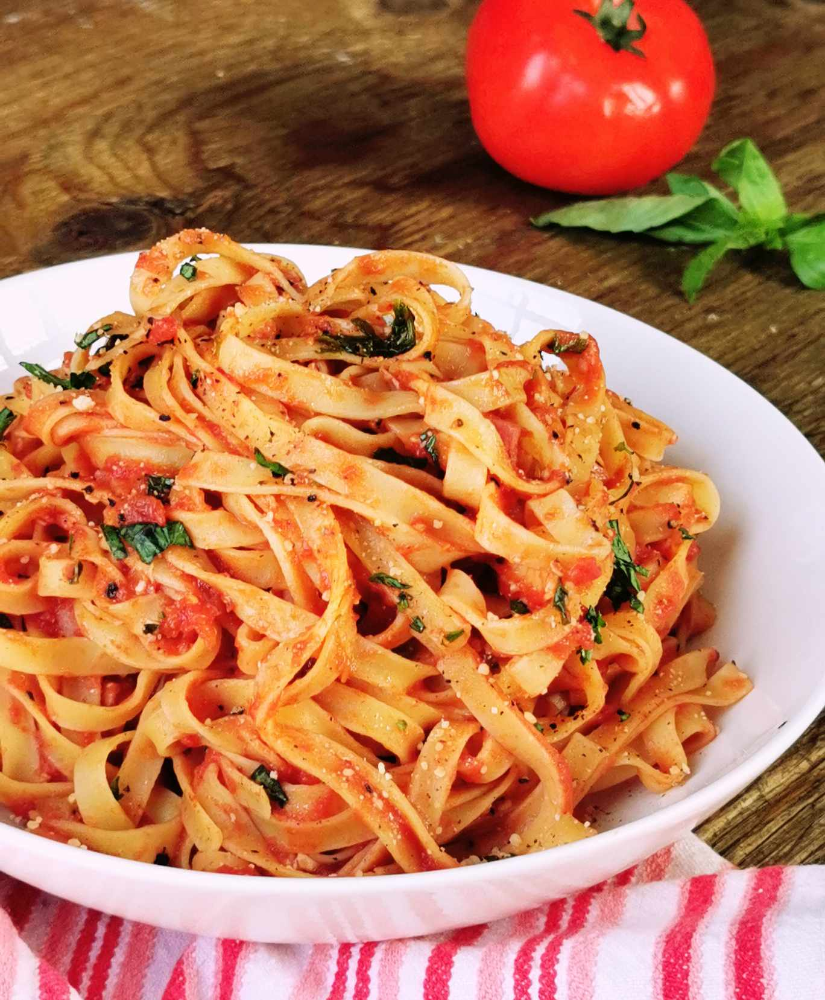

Tagliatelles Saumon Tomates Basilic

Description :
Avis aux amoureux de pâtes ! Découvrez cette superbe recette et profitez de l'été pour la faire avec des tomates et du basilic du jardin.
Ingrédients :
Pour 2 personnes :
- 1 pincée de poivre
- 1 pincée de sel
- 10cl de crème fraiche
- 1 oignon
- 3 tomates
- 200g de tagliatelles
- 6 feuilles de basilic
- 2 gousses d'ail
- 200g de saumon fumé
Préparation :
- Commencer à faire chauffer de l'eau salée pour les tagliatelles jusqu'à ébullition.
- Dans une poêle "wok", faire revenir l'ail et l'oignon émincés dans un filet d'huile d'olive.
- Ajouter ensuite les tomates coupées en dès d’environ 1 cm.
- Laisser cuire pendant quelques minutes, jusqu'à ce que les tomates soient un peu orangées. Poivrer.
- Incorporer le saumon en petits morceaux ainsi que le basilic haché.
- Ajouter la crème fraîche et laisser mijoter pendant 2 à 3 min.
- Servir chaud sur les tagliatelles.